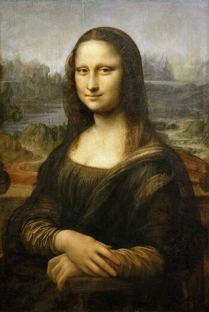
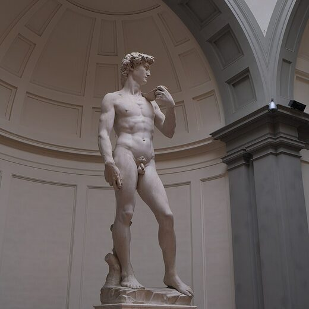
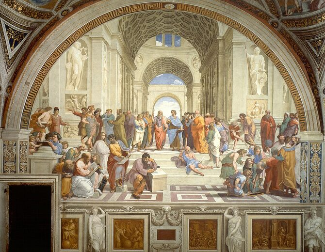
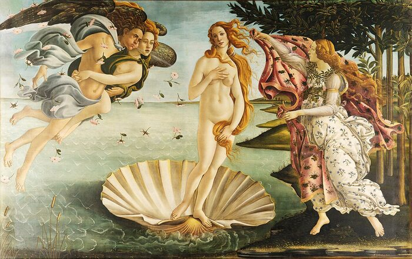

Mona Lisa (La Gioconda)
Leonardo sintetiza o ideal renascentista: sfumato, psicologia do retrato e paisagem atmosférica.
Sala II
Renascimento e a Invenção da Perspectiva
A perspectiva, o corpo clássico e a reinvenção do saber humano.

Leonardo sintetiza o ideal renascentista: sfumato, psicologia do retrato e paisagem atmosférica.

O David monumentaliza o corpo heroico como medida do mundo, diálogo entre antiguidade clássica e orgulho cívico florentino.

Rafael organiza o saber filosófico em espaço perspectivo perfeito, manifesto visual da sala.

Botticelli une mitologia pagã, linha elegante e sensibilidade poética neoplatônica.
Próxima sala